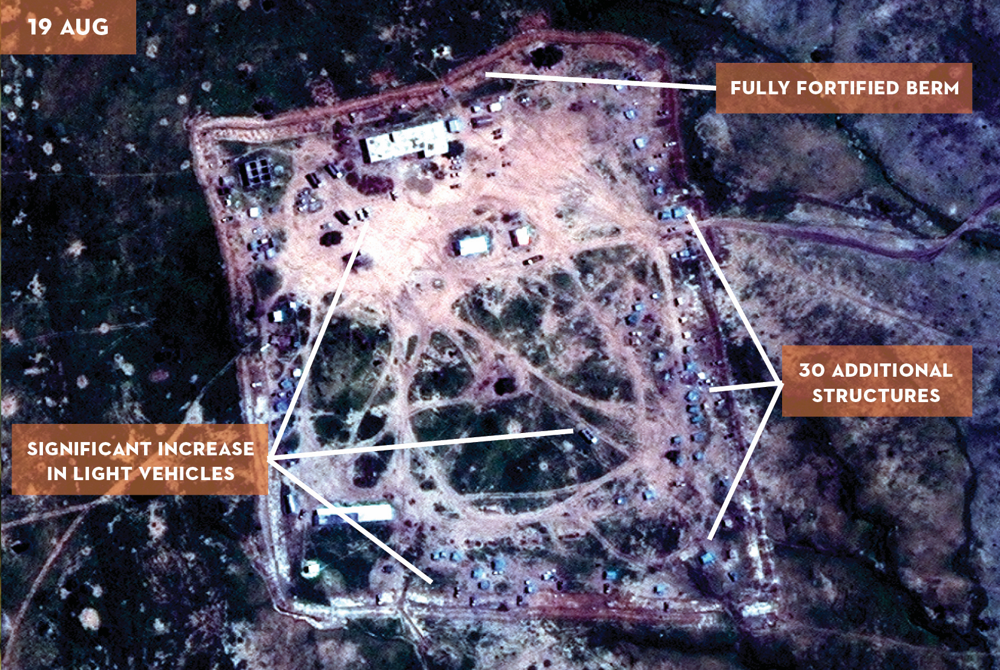

The Sky Milk Project
Sky Milk is a not-for-profit organization that aims to obtain intelligence and bring extremist militant insurgents into public scrutiny through remote espionage, human and computer analysis of imagery from threatened areas, and detailed investigative reporting.
Extracting satellite imagery of conflict areas, daily.
Automated web scraping from intelligence agencies, news corporations, and civilian reports leads to the tagging of suspect geographic locations for further analysis. Aerial coverage, in full-color and near infrared, of these interest areas captured by satellites is stored by Sky Milk, ranging in resolution from 100 meters down to 72 centimeters of coverage per pixel depending on the type of study required.

Analyzing unusual and suspicious activity through data inferencing.
Building alterations and new construction, along with identification of equipment and land use consistent with extremist movements trigger human intervention to develop data-driven insights. The conclusions are then used for model training and strengthening pattern analysis software to identify future threats before they emerge.
Reporting actionable information on threats to peace.
Public advisory and information dissemination is a key goal of Sky Milk, as well as place under scrutiny those atrocities that often go ignored in the wake of threats to national security identified by the government. After data extraction and full analysis of an area is complete, Sky Milk will publicly release a detailed and thorough report on the insights gained and the investigation underwent. In cases where possible, Sky Milk will alert authorities on unsanctioned activity where there is formidable risk to human life.